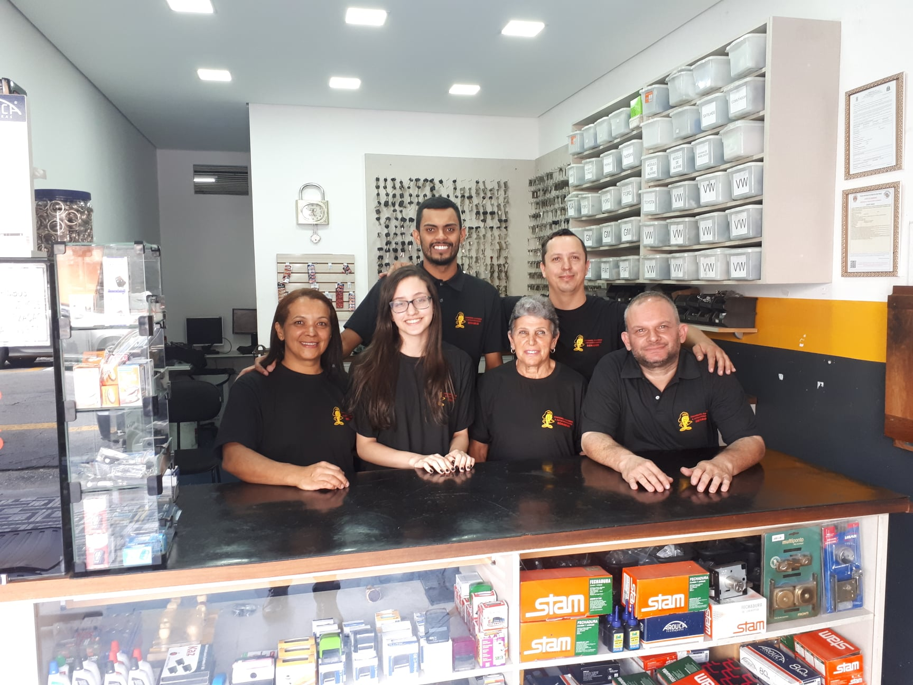
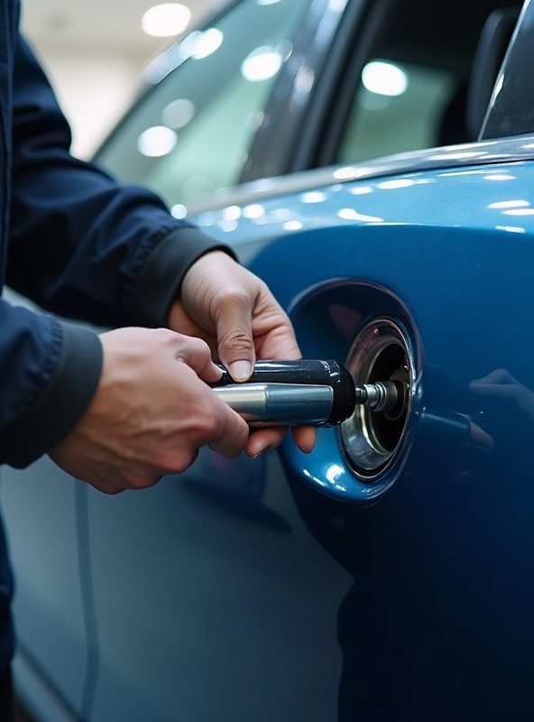
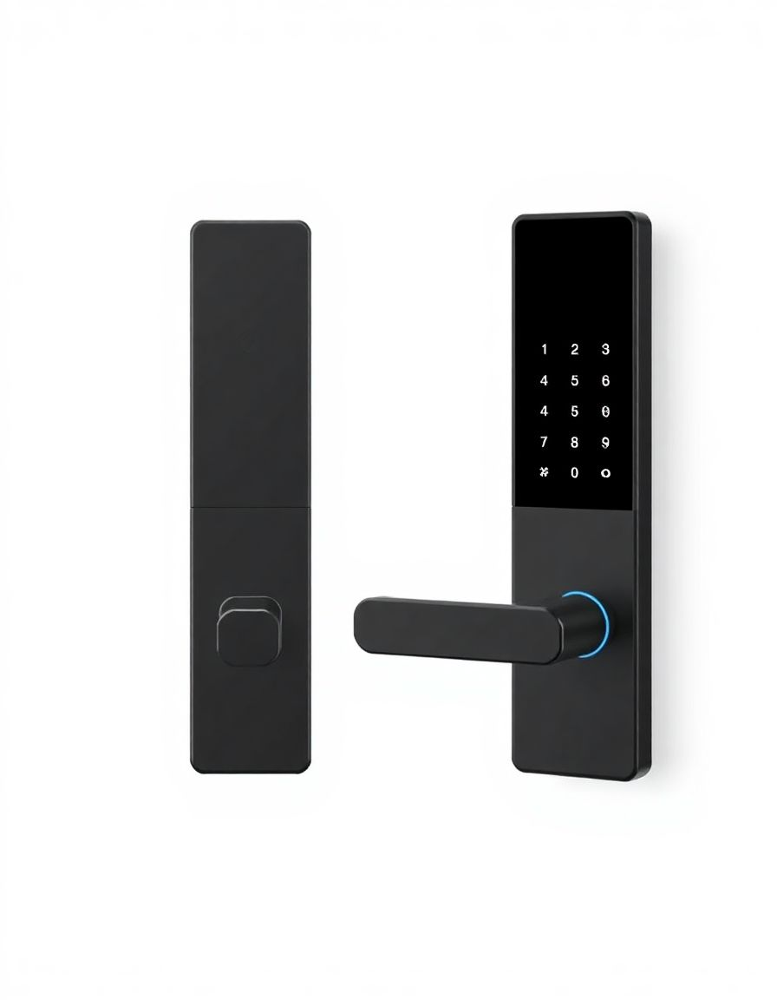
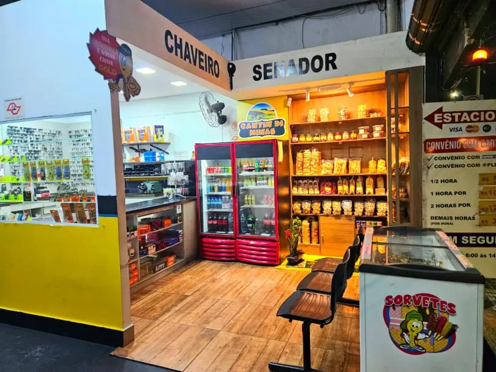
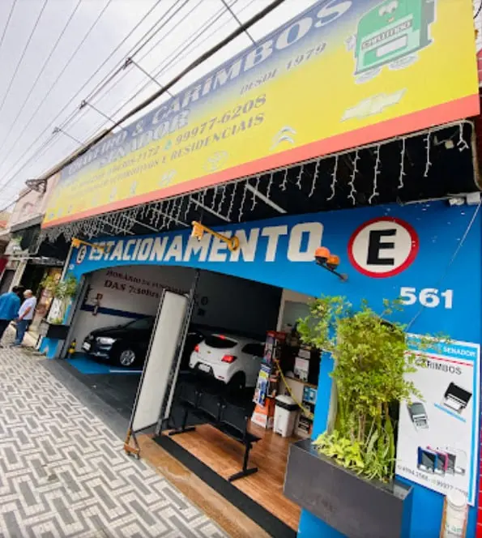

Abertura de Portas Residencial
Abrimos sua porta com rapidez e sem danificar fechadura ou batente.
Saiba maisAtendimento Rápido e Confiável
Ligar agoraProfissionais especializados em chaveiro em Santo André, prontos para resolver suas necessidades com qualidade, segurança e eficiência. Atendemos toda a região do ABC com serviços residenciais, automotivos e comerciais.
Serviços de chaveiro em Santo André com agilidade e conveniência. Atendimento rápido para suas necessidades residenciais, automotivas e comerciais. Nossa equipe está sempre pronta para atender você com qualidade e eficiência.
Com 46 anos de experiência no mercado, oferecemos soluções completas para todas as suas necessidades de chaveiro. Atendemos toda a região do ABC incluindo São Bernardo do Campo, Mauá, Diadema e São Caetano do Sul.

No Chaveiro Senador, chaveiro em Santo André com 46 anos de experiência, somos movidos pela excelência e pela satisfação do cliente. Nossa equipe é composta por profissionais altamente qualificados e com vasta experiência, comprometidos em oferecer um atendimento superior e soluções eficazes para todas as suas necessidades de segurança. Utilizamos equipamentos de última geração e técnicas atualizadas para garantir um serviço rápido, preciso e sem danos. Atendemos toda a região do ABC incluindo São Bernardo do Campo, Mauá, Diadema e São Caetano do Sul.
Como chaveiro em Santo André com 46 anos de experiência, estamos sempre prontos para atendê-lo com serviços residenciais, automotivos e comerciais. Oferecemos desde abertura de portas e troca de fechadura até instalação de fechaduras digitais e sistemas de segurança avançados. Nosso compromisso é com a sua tranquilidade, garantindo que você tenha acesso aos seus bens de forma rápida e segura.
Atendemos desde situações simples, como chave esquecida ou fechadura emperrada, até serviços mais complexos como confecção de chaves codificadas, programação de chave automotiva e instalação de fechaduras digitais em Santo André. Conte com o Chaveiro Senador para a segurança da sua casa, do seu carro ou da sua empresa, sempre com a máxima qualidade e transparência.
Como chaveiro em Santo André com 46 anos de experiência, oferecemos uma gama completa de serviços residenciais, automotivos e comerciais. Atendemos toda a região do ABC incluindo São Bernardo do Campo, Mauá, Diadema e São Caetano do Sul com equipe altamente qualificada e equipamentos de ponta.
Abrimos sua porta com rapidez e sem danificar fechadura ou batente.
Saiba maisCópia e programação de chave com chip e canivete para todas as marcas.
Saiba mais

Chaves novas sem trocar a fechadura inteira: mais segurança, menos custo.
Saiba maisSão 15 serviços residenciais, automotivos e comerciais.
Abrir catálogoComo chaveiro em Santo André, nossa expertise em chave codificada, programação de chave automotiva e sistemas automotivos é reconhecida pelas principais marcas do mercado. Atendemos toda a região do ABC.
Se sua empresa precisa de serviços de chaveiro regularmente, conheça nosso modelo de parceria. Como chaveiro comercial em Santo André, estamos sempre abertos a novas oportunidades de colaboração com empresas que buscam um parceiro confiável e eficiente. Seja você uma imobiliária, administradora de condomínios, oficina mecânica ou concessionária de veículos, temos a solução ideal para suas necessidades. Atendemos empresas e condomínios em toda a região do ABC.
Oficinas, concessionárias, locadoras ou até mesmo empresas que possuem frota de veículos, necessitam regularmente de serviços qualificados de chaveiro. Se este é o seu caso, saiba que contar com um bom parceiro é fundamental para garantir agilidade, confiança e o principal: muito mais economia.
Atendimento Prioritário: Resposta rápida para suas demandas com agilidade e eficiência
Condições Especiais: Preços diferenciados para contratos de parceria
Flexibilidade: Soluções personalizadas para o seu negócio
Confiabilidade: Equipe experiente e equipamentos de última geração
Oferecemos benefícios exclusivos para parceiros. Entre em contato e saiba mais!
Iniciar ParceriaVenha nos visitar ou solicite atendimento em domicílio. Estamos prontos para atender você com rapidez e qualidade.
Rua Senador Flaquer, 561
Centro - Santo André - SP
CEP: 09010-060
Ligue ou chame no WhatsApp: atendemos Santo André e todo o ABC.
Segunda a Sexta: 8h às 22h
Sábado: 8h às 16h
Domingo: Atendimento emergencial
Atendemos durante todo o horário de funcionamento para serviços de chaveiro residencial, automotivo e comercial em Santo André e região do ABC.
Explore alguns dos nossos trabalhos e veja o profissionalismo em cada detalhe.

